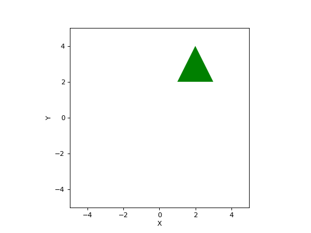

Geometry
Created on Sun Jul 5 09:42:30 2020
@author: corkep
- class Ellipse(radii=None, E=None, centre=(0, 0), theta=None)[source]
Bases:
object- classmethod FromPerimeter(p)[source]
Create an ellipse that fits a set of perimeter points
- Parameters
p (ndarray(2,N)) – a set of 2D perimeter points
- Returns
an ellipse instance
- Return type
Example:
>>> from spatialmath import Ellipse >>> import numpy as np >>> eref = Ellipse(radii=(1, 2), theta=np.pi / 4, centre=[3, 4]) >>> perim = eref.points() >>> print(perim.shape) (2, 20) >>> Ellipse.FromPerimeter(perim) Ellipse(radii=[1. 2.], centre=[3. 4.], theta=0.7853981633974317)
- Seealso
- classmethod FromPoints(p)[source]
Create an equivalent ellipse from a set of interior points
- Parameters
p (ndarray(2,N)) – a set of 2D interior points
- Returns
an ellipse instance
- Return type
Computes the ellipse that has the same inertia as the set of points.
- Seealso
- classmethod Polynomial(e, p=None)[source]
Create an ellipse from polynomial
- Parameters
e (arraylike(4) or arraylike(5)) – polynomial coeffients \(e\) or \(\eta\)
p (array_like(2), optional) – point to set scale
- Returns
an ellipse instance
- Return type
An ellipse can be specified by a polynomial \(\vec{e} \in \mathbb{R}^6\)
\[e_0 x^2 + e_1 y^2 + e_2 xy + e_3 x + e_4 y + e_5 = 0\]or \(\vec{\epsilon} \in \mathbb{R}^5\) where the leading coefficient is implicitly one
\[x^2 + \epsilon_1 y^2 + \epsilon_2 xy + \epsilon_3 x + \epsilon_4 y + \epsilon_5 = 0\]In this latter case, position, orientation and aspect ratio of the ellipse will be correct, but the overall scale of the ellipse is not determined. To correct this, we can pass in a single point
pthat we know lies on the perimeter of the ellipse.Example:
>>> from spatialmath import Ellipse >>> Ellipse.Polynomial([0.625, 0.625, 0.75, -6.75, -7.25, 24.625]) Ellipse(radii=[1. 2.], centre=[3. 4.], theta=0.7853981633974483)
- Seealso
- __init__(radii=None, E=None, centre=(0, 0), theta=None)[source]
Create an ellipse
- Parameters
radii (arraylike(2), optional) – radii of ellipse, defaults to None
E (ndarray(2,2), optional) – 2x2 matrix describing ellipse, defaults to None
centre (arraylike(2), optional) – centre of ellipse, defaults to (0, 0)
theta (float, optional) – orientation of ellipse, defaults to None
- Raises
ValueError – bad parameters
The ellipse shape can be specified by
radiiandthetaor by a symmetric 2x2 matrixE.Internally the ellipse is represented by a symmetric matrix \(\mat{E} \in \mathbb{R}^{2\times 2}\) and its centre coordinate \(\vec{x}_0 \in \mathbb{R}^2\) such that
\[(\vec{x} - \vec{x}_0)^{\top} \mat{E} \, (\vec{x} - \vec{x}_0) = 1\]Example:
>>> from spatialmath import Ellipse >>> import numpy as np >>> Ellipse(radii=(1,2), theta=0) Ellipse(radii=[1. 2.], centre=(0, 0), theta=0.0) >>> Ellipse(E=np.array([[1, 1], [1, 2]])) Ellipse(radii=[1.618 0.618], centre=(0, 0), theta=1.0172219678978514)
- contains(p)[source]
Test if points are contained by ellipse
- Parameters
p (arraylike(2), ndarray(2,N)) – point or points to test
- Returns
true if point is contained within ellipse
- Return type
bool or list(bool)
Example:
>>> from spatialmath import Ellipse >>> e = Ellipse(radii=(1,2), centre=(3,4), theta=0.5) >>> e.contains((3,4)) True >>> e.contains((0,0)) False
- plot(**kwargs)[source]
Plot ellipse
- Parameters
kwargs – arguments passed to
plot_ellipse()- Returns
list of artists
- Return type
_type_
Example:
>>> from spatialmath import Ellipse >>> from spatialmath.base import plotvol2 >>> plotvol2(5) >>> e = Ellipse(E=np.array([[1, 1], [1, 2]])) >>> e.plot() >>> e.plot(filled=True, color='r')
(Source code, png, hires.png, pdf)
(Source code, png, hires.png, pdf)
- Seealso
- points(resolution=20)[source]
Generate perimeter points
- Parameters
resolution (int, optional) – number of points on circumferance, defaults to 20
- Returns
set of perimeter points
- Return type
Points2
Return a set of
resolutionpoints on the perimeter of the ellipse. The perimeter set is not closed, that is, last point != first point.Example:
>>> from spatialmath import Ellipse >>> e = Ellipse(radii=(1,2), centre=(3,4), theta=0.5) >>> e.points()[:,:5] # first 5 points array([[4.2298, 4.0396, 3.7477, 3.3825, 2.9799], [3.5793, 4.1469, 4.7001, 5.1848, 5.5535]])
- Seealso
polygon()ellipse()
- polygon(resolution=10)[source]
Approximate with a polygon
- Parameters
resolution (int, optional) – number of polygon vertices, defaults to 10
- Returns
a polygon approximating the ellipse
- Return type
Polygon2instance
Return a polygon instance with
resolutionvertices. APolygon2`can be used for intersection testing with lines or other polygons.Example:
>>> from spatialmath import Ellipse >>> e = Ellipse(radii=(1,2), centre=(3,4), theta=0.5) >>> e.polygon() Polygon2 with 10 vertices
- Seealso
- property E
Return ellipse matrix
- Returns
ellipse matrix
- Return type
ndarray(2,2)
The symmetric matrix \(\mat{E} \in \mathbb{R}^{2\times 2}\) determines the radii and the orientation of the ellipse
\[(\vec{x} - \vec{x}_0)^{\top} \mat{E} \, (\vec{x} - \vec{x}_0) = 1\]Example:
>>> from spatialmath import Ellipse >>> e = Ellipse(radii=(1,2), centre=(3,4), theta=0.5) >>> e.E array([[0.8276, 0.3156], [0.3156, 0.4224]])
- property area: float
Area of ellipse
- Returns
area
- Return type
float
Example:
>>> from spatialmath import Ellipse >>> e = Ellipse(radii=(1,2), centre=(3,4), theta=0.5) >>> e.area 6.283185307179586
- property centre: numpy.ndarray[Any, numpy.dtype[numpy.floating]]
Return ellipse centre
- Returns
centre of the ellipse
- Return type
ndarray(2)
Example:
>>> from spatialmath import Ellipse >>> e = Ellipse(radii=(1,2), centre=(3,4), theta=0.5) >>> e.centre (3, 4)
- property polynomial
Return ellipse as a polynomial
- Returns
polynomial
- Return type
ndarray(6)
An ellipse can be described by \(\vec{e} \in \mathbb{R}^6\) which are the coefficents of a quadratic in \(x\) and \(y\)
\[e_0 x^2 + e_1 y^2 + e_2 xy + e_3 x + e_4 y + e_5 = 0\]Example:
>>> from spatialmath import Ellipse >>> e = Ellipse(radii=(1,2), centre=(3,4), theta=0.5) >>> e.polynomial array([ 0.8276, 0.4224, 0.6311, -7.4901, -5.2724, 21.7799])
- Seealso
- property radii: numpy.ndarray[Any, numpy.dtype[numpy.floating]]
Return radii of the ellipse
- Returns
radii of the ellipse
- Return type
ndarray(2)
Example:
>>> from spatialmath import Ellipse >>> e = Ellipse(radii=(1,2), centre=(3,4), theta=0.5) >>> e.radii array([1., 2.])
{kind=link}
{kind=link}
{kind=link}
{kind=link}
- class Line2(line)[source]
Bases:
objectClass to represent 2D lines
The internal representation is in homogeneous format
\[ax + by + c = 0\]- classmethod General(m, c)[source]
Create line from general line
- Parameters
m (float) – line gradient
c (float) – line intercept
- Returns
a 2D line
- Return type
a Line2 instance
Creates a line from the parameters of the general line \(y = mx + c\).
Note
A vertical line cannot be represented.
- classmethod Join(p1, p2)[source]
Create 2D line from two points
- Parameters
p1 (array_like(2) or array_like(3)) – point on the line
p2 (array_like(2) or array_like(3)) – another point on the line
The points can be given in Euclidean or homogeneous form.
- Return type
Self
- contains(p, tol=10)[source]
Test if point is in line
- Parameters
p1 (array_like(2) or array_like(3)) – point to test
- Returns
True if point lies in the line
- Return type
bool
- general()[source]
Parameters of general line
- Returns
parameters of general line (m, c)
- Return type
ndarray(2)
Return the parameters of a general line \(y = mx + c\).
- intersect(other, tol=10)[source]
Intersection with line
- Parameters
other (Line2) – another 2D line
- Returns
intersection point in homogeneous form
- Return type
ndarray(3)
If the lines are parallel then the third element of the returned homogeneous point will be zero (an ideal point).
- intersect_segment(p1, p2)[source]
Test for line intersecting line segment
- Parameters
p1 (array_like(2) or array_like(3)) – start of line segment
p2 (array_like(2) or array_like(3)) – end of line segment
- Returns
True if they intersect
- Return type
bool
Tests whether the line intersects the line segment defined by endpoints
p1andp2which are given in Euclidean or homogeneous form.
- class LineSegment2(line)[source]
Bases:
spatialmath.geom2d.Line2- classmethod General(m, c)
Create line from general line
- Parameters
m (float) – line gradient
c (float) – line intercept
- Returns
a 2D line
- Return type
a Line2 instance
Creates a line from the parameters of the general line \(y = mx + c\).
Note
A vertical line cannot be represented.
- classmethod Join(p1, p2)
Create 2D line from two points
- Parameters
p1 (array_like(2) or array_like(3)) – point on the line
p2 (array_like(2) or array_like(3)) – another point on the line
The points can be given in Euclidean or homogeneous form.
- Return type
Self
- classmethod TwoPoints(p1, p2)
- Return type
Self
- __init__(line)
- contains(p, tol=10)
Test if point is in line
- Parameters
p1 (array_like(2) or array_like(3)) – point to test
- Returns
True if point lies in the line
- Return type
bool
- contains_polygon_point()
- distance_line_line()
- distance_line_point()
- general()
Parameters of general line
- Returns
parameters of general line (m, c)
- Return type
ndarray(2)
Return the parameters of a general line \(y = mx + c\).
- intersect(other, tol=10)
Intersection with line
- Parameters
other (Line2) – another 2D line
- Returns
intersection point in homogeneous form
- Return type
ndarray(3)
If the lines are parallel then the third element of the returned homogeneous point will be zero (an ideal point).
- intersect_polygon___line()
- intersect_segment(p1, p2)
Test for line intersecting line segment
- Parameters
p1 (array_like(2) or array_like(3)) – start of line segment
p2 (array_like(2) or array_like(3)) – end of line segment
- Returns
True if they intersect
- Return type
bool
Tests whether the line intersects the line segment defined by endpoints
p1andp2which are given in Euclidean or homogeneous form.
- plot(**kwargs)
Plot the line using matplotlib
- Parameters
kwargs – arguments passed to Matplotlib
pyplot.plot- Return type
None
- points_join()
- class Polygon2(vertices=None, close=True)[source]
Bases:
objectClass to represent 2D (planar) polygons
Note
Uses Matplotlib primitives to perform transformations and intersections.
- __init__(vertices=None, close=True)[source]
Create planar polygon from vertices
- Parameters
vertices (ndarray(2, N), optional) – vertices of polygon, defaults to None
close (
bool) – closes the polygon, replicates the first vertex, defaults to True
Create a polygon from a set of points provided as columns of the 2D array
vertices. A closed polygon is created so the last vertex should not equal the first.Example:
>>> from spatialmath import Polygon2 >>> p = Polygon2([(1, 2), (3, 2), (2, 4)])
Warning
The points must be sequential around the perimeter and counter clockwise, otherwise moments will be negative.
Note
The polygon is represented by a Matplotlib
Path
- animate(T, **kwargs)[source]
Animate a polygon
- Parameters
T (SE2) – new pose of Polygon
kwargs – options passed to Matplotlib
Patch
The plotted polygon is moved to the pose given by
T. The pose is always with respect to the initial vertices when the polygon was constructed. The vertices of the polygon will be updated to reflect what is plotted.If the polygon has already plotted, it will keep the same graphical attributes. If new attributes are given they will replace those given at construction time.
- Seealso
- Return type
None
- area()[source]
Area of polygon
- Returns
area
- Return type
float
Example:
>>> from spatialmath import Polygon2 >>> p = Polygon2([(1, 2), (3, 2), (2, 4)]) >>> p.area() 2.0
- Seealso
- bbox()[source]
Bounding box of polygon
- Returns
bounding box as [xmin, xmax, ymin, ymax]
- Return type
ndarray(4)
Example:
>>> from spatialmath import Polygon2 >>> p = Polygon2([(1, 2), (3, 2), (2, 4)]) >>> p.bbox() array([1., 2., 3., 4.])
- centroid()[source]
Centroid of polygon
- Returns
centroid
- Return type
ndarray(2)
Example:
>>> from spatialmath import Polygon2 >>> p = Polygon2([(1, 2), (3, 2), (2, 4)]) >>> p.centroid() array([2. , 2.6667])
- Seealso
- contains(p, radius=0.0)[source]
Test if point is inside polygon
- Parameters
p (array_like(2)) – point
radius (float, optional) – Add an additional margin to the polygon boundary, defaults to 0.0
- Returns
True if point is contained by polygon
- Return type
bool
radiuscan be used to inflate the polygon, or if negative, to deflated it.Example:
>>> from spatialmath import Polygon2 >>> p = Polygon2([(1, 2), (3, 2), (2, 4)]) >>> p.contains([0, 0]) False >>> p.contains([2, 3]) True
Warning
Returns True if the point is on the edge of the polygon but False if the point is one of the vertices.
Warning
For a polygon with clockwise ordering of vertices the sign of
radiusis flipped.- Seealso
matplotlib.contains_point()
- edges()[source]
Iterate over polygon edge segments
Creates an iterator that returns pairs of points representing the end points of each segment.
- Return type
Iterator
- intersects(other)[source]
Test for intersection
- Parameters
other (Polygon2 or Line2 or list(Polygon2) or list(Line2)) – object to test for intersection
- Returns
True if the polygon intersects
other- Return type
bool
- Raises
ValueError –
Returns true if the polygon intersects the the given polygon or 2D line. If
otheris a list, test against all in the list and return on the first intersection.
- moment(p, q)[source]
Moments of polygon
- Parameters
p (int) – moment order x
q (int) – moment order y
Returns the pq’th moment of the polygon
\[M(p, q) = \sum_{i=0}^{n-1} x_i^p y_i^q\]Example:
>>> from spatialmath import Polygon2 >>> p = Polygon2([(1, 2), (3, 2), (2, 4)]) >>> p.moment(0, 0) # area 2.0 >>> p.moment(3, 0) 18.0
Note is negative for clockwise perimeter.
- Return type
float
- plot(ax=None, **kwargs)[source]
Plot polygon
- Parameters
ax (Axes, optional) – axes in which to draw the polygon, defaults to None
kwargs – options passed to Matplotlib
Patch
A Matplotlib Patch is created with the passed options
**kwargsand added to the axes.Examples:
>>> from spatialmath.base import plotvol2, plot_polygon >>> plotvol2(5) >>> p = Polygon2([(1, 2), (3, 2), (2, 4)]) >>> p.plot(fill=False) >>> p.plot(facecolor="g", edgecolor="none") # green filled triangle
(Source code, png, hires.png, pdf)
(Source code, png, hires.png, pdf)
 - Seealso
animate()matplotlib.PathPatch()- Return type
None
- radius()[source]
Radius of smallest enclosing circle
- Returns
radius
- Return type
float
This is the radius of the smalleset circle, centred at the centroid, that encloses all vertices.
Example:
>>> from spatialmath import Polygon2 >>> p = Polygon2([(1, 2), (3, 2), (2, 4)]) >>> p.radius() 1.3333333333333335
- transformed(T)[source]
A transformed copy of polygon
Returns a new polgyon whose vertices have been transformed by
T.Example:
>>> from spatialmath import Polygon2, SE2 >>> p = Polygon2([(1, 2), (3, 2), (2, 4)]) >>> p.vertices() array([[1., 3., 2.], [2., 2., 4.]]) >>> p.transformed(SE2(10, 0, 0)).vertices() # shift by x+10 array([[11., 13., 12.], [ 2., 2., 4.]])
- vertices(unique=True)[source]
Vertices of polygon
- Parameters
unique (bool, optional) – return only the unique vertices , defaults to True
- Returns
vertices
- Return type
ndarray(2,n)
Returns the set of vertices. The polygon is always closed, that is, the first and last vertices are the same. The
uniqueoption does not include the last vertex.Example:
{kind=link}
{kind=link}
{kind=link}
{kind=link}